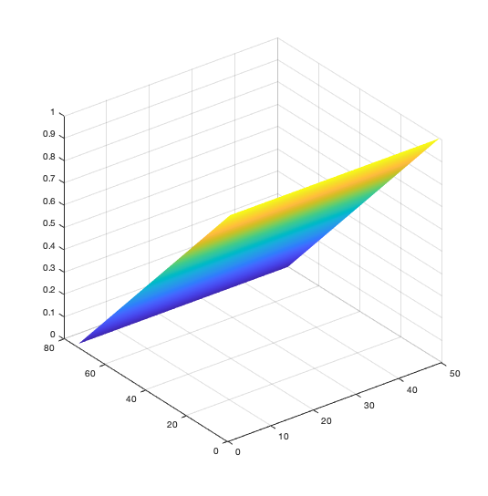
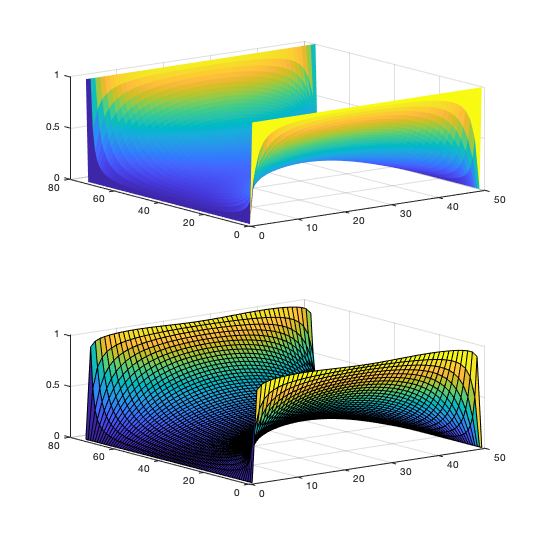
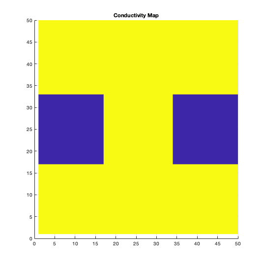
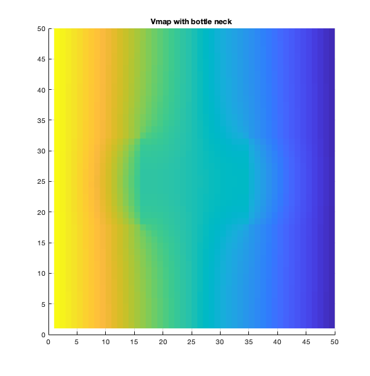
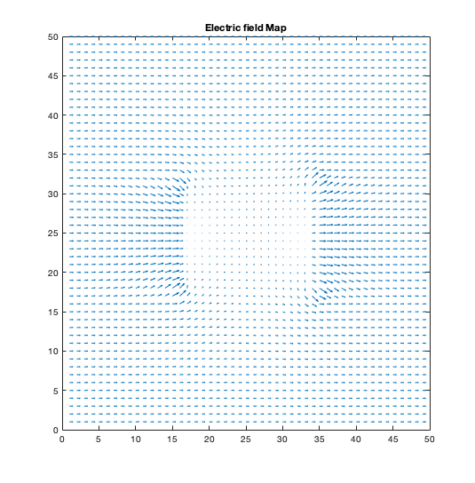
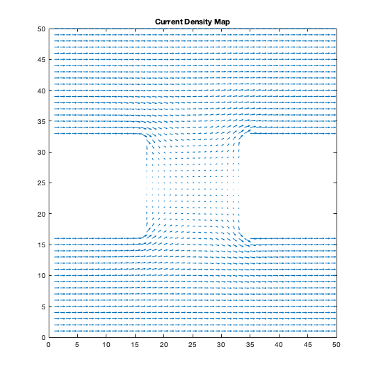
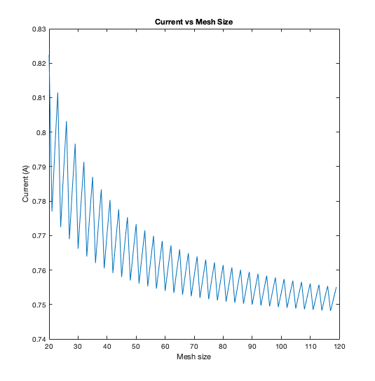
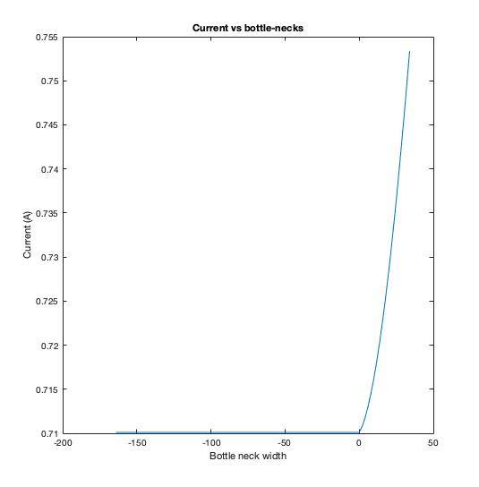
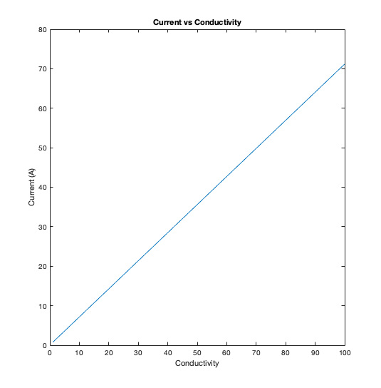

ASSIGNMENT TWO - ELEC 4700
Contents
Joseph Kingsley A.Amiah
Question 1
(a) Case where V = Vo at x = 0 and V = 0 at x = L;
The Code
clearvars clearvars -GLOBAL close all %set(0,'DefaultFigureWindowStyle', 'docked') global C global CuCond global nx ny C.q_0 = 1.60217653e-19; % electron charge C.hb = 1.054571596e-34; % Dirac constant C.h = C.hb * 2 * pi; % Planck constant C.m_0 = 9.10938215e-31; % electron mass C.kb = 1.3806504e-23; % Boltzmann constant C.eps_0 = 8.854187817e-12; % vacuum permittivity C.mu_0 = 1.2566370614e-6; % vacuum permeability C.c = 299792458; % speed of light C.g = 9.80665; % metres (32.1740 ft) per s² nx = 75; ny = 50; CuCond = 1.7e-8; %Conductivity Map cMap = zeros(nx,ny); for i = 1:nx for j = 1: ny cMap(i,j) = CuCond; end end G = sparse(nx*ny, nx*ny); F = zeros(1, nx*ny); % G - Matrix Formulation for i = 1:nx for j = 1:ny n = j + (i - 1) * ny; if i == 1 G(n,:) = 0; G(n,n) = 1; F(n) = 1; elseif i == nx G(n,:) = 0; G(n,n) = 1; elseif j == 1 nxm = j + (i-2) * ny; nxp = j + (i) * ny; nyp = (j+1) + (i-1) * ny; rxm = (cMap(i,j) + cMap(i-1,j))/2.0; rxp = (cMap(i,j) + cMap(i+1,j))/2.0; ryp = (cMap(i,j) + cMap(i,j+1))/2.0; G(n,n) = -(rxm + rxp + ryp); G(n,nxm) = rxm; G(n,nxp) = rxp; G(n, nyp) = ryp; elseif j == ny nxm = j + (i-2) * ny; nxp = j + (i) * ny; nym = (j-1) + (i-1) * ny; rxm = (cMap(i,j) + cMap(i-1,j))/2.0; rxp = (cMap(i,j) + cMap(i+1,j))/2.0; rym = (cMap(i,j) + cMap(i,j-1))/2.0; G(n,n) = -(rxm + rxp + rym); G(n,nxm) = rxm; G(n,nxp) = rxp; G(n, nym) = rym; else nxm = j + (i-2) * ny; nxp = j + (i) * ny; nym = (j-1) + (i-1) * ny; nyp = (j+1) + (i-1) * ny; rxm = (cMap(i,j) + cMap(i-1,j))/2.0; rxp = (cMap(i,j) + cMap(i+1,j))/2.0; rym = (cMap(i,j) + cMap(i,j-1))/2.0; ryp = (cMap(i,j) + cMap(i,j+1))/2.0; G(n,n) = -(rxm + rxp + rym + ryp); G(n,nxm) = rxm; G(n,nxp) = rxp; G(n, nym) = rym; G(n, nyp) = ryp; end end end % Using Finite Difference V = G\F'; for i = 1:nx for j = 1:ny n = j + (i-1) * ny; VG(i,j) = V(n); end end figure set(surf(VG),'linestyle', 'none');
(b) Case where V = Vo at x = 0, x = L and V = 0 at y = 0, y = W;
clearvars clearvars -GLOBAL close all %set(0,'DefaultFigureWindowStyle', 'docked') nx = 75; ny = 50; CuCond = 1.7e-8; %Conductivity map cMap = zeros(nx,ny); for i = 1:nx for j = 1: ny cMap(i,j) = CuCond; end end G = sparse(nx*ny, nx*ny); F = zeros(1, nx*ny); for i = 1:nx for j = 1:ny n = j + (i - 1) * ny; if i == 1 G(n,:) = 0; G(n,n) = 1; F(n) = 1; elseif i == nx G(n,:) = 0; G(n,n) = 1; F(n) = 1; elseif j == 1 G(n,:) = 0; G(n,n) = 1; F(n) = 0; elseif j == ny G(n,:) = 0; G(n,n) = 1; F(n) = 0; else nxm = j + (i-2) * ny; nxp = j + (i) * ny; nym = (j-1) + (i-1) * ny; nyp = (j+1) + (i-1) * ny; rxm = (cMap(i,j) + cMap(i-1,j))/2.0; rxp = (cMap(i,j) + cMap(i+1,j))/2.0; rym = (cMap(i,j) + cMap(i,j-1))/2.0; ryp = (cMap(i,j) + cMap(i,j+1))/2.0; G(n,n) = -(rxm + rxp + rym + ryp); G(n,nxm) = rxm; G(n,nxp) = rxp; G(n, nym) = rym; G(n, nyp) = ryp; end end end % V using Finite Difference Method V = G\F'; for i = 1:nx for j = 1:ny n = j + (i-1) * ny; VG(i,j) = V(n); end end figure subplot(2,1,1); set(surf(VG),'linestyle', 'none'); % V using the Analytical Series Method N =101; a = ny; b = nx/2; VpSig = zeros(nx,ny); x = linspace(-b,b,nx); y = linspace(0,a,ny); VSig = zeros(nx,ny); for k = 1:2:N for i = 1:nx for j = 1:ny VpSig(i,j) = ((4*1)/pi) * (1/k) * ((cosh((k*pi*x(i))/a))/(cosh((k*pi*b)/a))) * sin((k*pi*y(j))/a); end end VSig = (VSig + VpSig); subplot(2,1,2); surf(VSig) pause(0.1) end
Both analytical and numerical show similar responses. Curved edges in the analytical plot show that the analytical simulation will need a lot itereations to get a precise answer. The multiple iterations may or may not allow the simulation to converge at a final solution.
Question 2
(a) Plots are shown below
clearvars clearvars -GLOBAL close all set(0,'DefaultFigureWindowStyle', 'docked') global C global CuCond NoCond global nx ny C.q_0 = 1.60217653e-19; % electron charge C.hb = 1.054571596e-34; % Dirac constant C.h = C.hb * 2 * pi; % Planck constant C.m_0 = 9.10938215e-31; % electron mass C.kb = 1.3806504e-23; % Boltzmann constant C.eps_0 = 8.854187817e-12; % vacuum permittivity C.mu_0 = 1.2566370614e-6; % vacuum permeability C.c = 299792458; % speed of light C.g = 9.80665; % metres (32.1740 ft) per s² nx = 50; ny = 50; Lb = floor(nx/3); Wb = floor(ny/3); CuCond = 100; NoCond = 10e-9; %Conductivity map cMap = zeros(nx,ny); for i = 1:nx for j = 1: ny cMap(i,j) = CuCond; end end for i = 1:nx for j = 1:ny if (i>=1 && i<=Wb && j>Lb && j<=(2*Lb)) cMap(i,j) = NoCond; end if (i<=ny && i>=(ny-Wb) && j>Lb && j<=(2*Lb)) cMap(i,j) = NoCond; end end end G = sparse(nx*ny, nx*ny); F = zeros(1, nx*ny); % V using Finite Difference Method for i = 1:nx for j = 1:ny n = j + (i - 1) * ny; if i == 1 G(n,:) = 0; G(n,n) = 1; F(n) = 1; elseif i == nx G(n,:) = 0; G(n,n) = 1; elseif j == 1 nxm = j + (i-2) * ny; nxp = j + (i) * ny; nyp = (j+1) + (i-1) * ny; rxm = (cMap(i,j) + cMap(i-1,j))/2.0; rxp = (cMap(i,j) + cMap(i+1,j))/2.0; ryp = (cMap(i,j) + cMap(i,j+1))/2.0; G(n,n) = -(rxm + rxp + ryp); G(n,nxm) = rxm; G(n,nxp) = rxp; G(n, nyp) = ryp; elseif j == ny nxm = j + (i-2) * ny; nxp = j + (i) * ny; nym = (j-1) + (i-1) * ny; rxm = (cMap(i,j) + cMap(i-1,j))/2.0; rxp = (cMap(i,j) + cMap(i+1,j))/2.0; rym = (cMap(i,j) + cMap(i,j-1))/2.0; G(n,n) = -(rxm + rxp + rym); G(n,nxm) = rxm; G(n,nxp) = rxp; G(n, nym) = rym; else nxm = j + (i-2) * ny; nxp = j + (i) * ny; nym = (j-1) + (i-1) * ny; nyp = (j+1) + (i-1) * ny; rxm = (cMap(i,j) + cMap(i-1,j))/2.0; rxp = (cMap(i,j) + cMap(i+1,j))/2.0; rym = (cMap(i,j) + cMap(i,j-1))/2.0; ryp = (cMap(i,j) + cMap(i,j+1))/2.0; G(n,n) = -(rxm + rxp + rym + ryp); G(n,nxm) = rxm; G(n,nxp) = rxp; G(n, nym) = rym; G(n, nyp) = ryp; end end end V = G\F'; for i = 1:nx for j = 1:ny n = j + (i-1) * ny; VG(i,j) = V(n); end end % V using the Analytical Series Method N =101; a = ny; b = nx/2; VpSig = zeros(nx,ny); for i = 1:nx for j = 1:ny if i == 1 Ex(i, j) = (VG(i + 1, j) - VG(i, j)); elseif i == nx Ex(i, j) = (VG(i, j) - VG(i - 1, j)); else Ex(i, j) = (VG(i + 1, j) - VG(i - 1, j)) * 0.5; end if j == 1 Ey(i, j) = (VG(i, j + 1) - VG(i, j)); elseif j == ny Ey(i, j) = (VG(i, j) - VG(i, j - 1)); else Ey(i, j) = (VG(i, j + 1) - VG(i, j - 1)) * 0.5; end end end Ex = -Ex; Ey = -Ey; Jx = cMap .* Ex; Jy = cMap .* Ey; figure H = surf(cMap'); title('Conductivity Map') set(H, 'linestyle', 'none'); view(0, 90) figure H = surf(VG'); title('Vmap with bottle neck') set(H, 'linestyle', 'none'); view(0, 90) figure quiver(Ex', Ey'); title('Electric field Map') axis([0 nx 0 ny]); figure quiver(Jx', Jy'); title('Current Density Map') axis([0 nx 0 ny]); C0 = sum(Jx(1, :)); Cnx = sum(Jx(nx, :)); Curr = (C0 + Cnx) * 0.5;   
Graph of current vs mesh size
clearvars clearvars -GLOBAL close all set(0,'DefaultFigureWindowStyle', 'docked') global C global CuCond NoCond global nx ny C.q_0 = 1.60217653e-19; % electron charge C.hb = 1.054571596e-34; % Dirac constant C.h = C.hb * 2 * pi; % Planck constant C.m_0 = 9.10938215e-31; % electron mass C.kb = 1.3806504e-23; % Boltzmann constant C.eps_0 = 8.854187817e-12; % vacuum permittivity C.mu_0 = 1.2566370614e-6; % vacuum permeability C.c = 299792458; % speed of light C.g = 9.80665; % metres (32.1740 ft) per s² nx = 20; ny = 20; startSim = 20; limitSim = 100; Curr = zeros(1,limitSim); Meshsizes = zeros(1,limitSim); neckBT = zeros(1,limitSim); for u = 1:limitSim Meshsizes(u) = nx; Lb = floor(nx/3); Wb = floor(ny/3); CuCond = 1; NoCond = 10e-2; %Conductivity map cMap = zeros(nx,ny); for i = 1:nx for j = 1: ny cMap(i,j) = CuCond; end end for i = 1:nx for j = 1:ny if (i>=1 && i<=Wb && j>Lb && j<=(2*Lb)) cMap(i,j) = NoCond; end if (i<=ny && i>=(ny-Wb) && j>Lb && j<=(2*Lb)) cMap(i,j) = NoCond; end end end G = sparse(nx*ny, nx*ny); F = zeros(1, nx*ny); for i = 1:nx for j = 1:ny n = j + (i - 1) * ny; if i == 1 G(n,:) = 0; G(n,n) = 1; F(n) = 1; elseif i == nx G(n,:) = 0; G(n,n) = 1; elseif j == 1 nxm = j + (i-2) * ny; nxp = j + (i) * ny; nyp = (j+1) + (i-1) * ny; rxm = (cMap(i,j) + cMap(i-1,j))/2.0; rxp = (cMap(i,j) + cMap(i+1,j))/2.0; ryp = (cMap(i,j) + cMap(i,j+1))/2.0; G(n,n) = -(rxm + rxp + ryp); G(n,nxm) = rxm; G(n,nxp) = rxp; G(n, nyp) = ryp; elseif j == ny nxm = j + (i-2) * ny; nxp = j + (i) * ny; nym = (j-1) + (i-1) * ny; rxm = (cMap(i,j) + cMap(i-1,j))/2.0; rxp = (cMap(i,j) + cMap(i+1,j))/2.0; rym = (cMap(i,j) + cMap(i,j-1))/2.0; G(n,n) = -(rxm + rxp + rym); G(n,nxm) = rxm; G(n,nxp) = rxp; G(n, nym) = rym; else nxm = j + (i-2) * ny; nxp = j + (i) * ny; nym = (j-1) + (i-1) * ny; nyp = (j+1) + (i-1) * ny; rxm = (cMap(i,j) + cMap(i-1,j))/2.0; rxp = (cMap(i,j) + cMap(i+1,j))/2.0; rym = (cMap(i,j) + cMap(i,j-1))/2.0; ryp = (cMap(i,j) + cMap(i,j+1))/2.0; G(n,n) = -(rxm + rxp + rym + ryp); G(n,nxm) = rxm; G(n,nxp) = rxp; G(n, nym) = rym; G(n, nyp) = ryp; end end end V = G\F'; for i = 1:nx for j = 1:ny n = j + (i-1) * ny; VG(i,j) = V(n); end end for i = 1:nx for j = 1:ny if i == 1 Ex(i, j) = (VG(i + 1, j) - VG(i, j)); elseif i == nx Ex(i, j) = (VG(i, j) - VG(i - 1, j)); else Ex(i, j) = (VG(i + 1, j) - VG(i - 1, j)) * 0.5; end if j == 1 Ey(i, j) = (VG(i, j + 1) - VG(i, j)); elseif j == ny Ey(i, j) = (VG(i, j) - VG(i, j - 1)); else Ey(i, j) = (VG(i, j + 1) - VG(i, j - 1)) * 0.5; end end end Ex = -Ex; Ey = -Ey; Jx = cMap .* Ex; Jy = cMap .* Ey; C0 = sum(Jx(1, :)); Cnx = sum(Jx(nx, :)); %Current Curr(u) = (C0 + Cnx) * 0.5; %Sizes nx = nx+1; ny = ny+1; end %Current vs Mesh Size figure plot(Meshsizes, Curr); title('Current vs Mesh Size') xlabel('Mesh size') ylabel('Current (A)')
Current vs bottle Neck
clearvars clearvars -GLOBAL close all set(0,'DefaultFigureWindowStyle', 'docked') global C global CuCond NoCond global nx ny C.q_0 = 1.60217653e-19; % electron charge C.hb = 1.054571596e-34; % Dirac constant C.h = C.hb * 2 * pi; % Planck constant C.m_0 = 9.10938215e-31; % electron mass C.kb = 1.3806504e-23; % Boltzmann constant C.eps_0 = 8.854187817e-12; % vacuum permittivity C.mu_0 = 1.2566370614e-6; % vacuum permeability C.c = 299792458; % speed of light C.g = 9.80665; % metres (32.1740 ft) per s² nx = 100; ny = 100; startSim = 20; limitSim = 100; Curr = zeros(1,limitSim); Necksizes = zeros(1,limitSim); Lb = floor(nx/3); Wb = floor(ny/3); for u = 1:limitSim Necksizes(u) = Wb; CuCond = 1; NoCond = 10e-2; %Conductivity map cMap = zeros(nx,ny); for i = 1:nx for j = 1: ny cMap(i,j) = CuCond; end end for i = 1:nx for j = 1:ny if (i>=1 && i<=Wb && j>Lb && j<=(2*Lb)) cMap(i,j) = NoCond; end if (i<=ny && i>=(ny-Wb) && j>Lb && j<=(2*Lb)) cMap(i,j) = NoCond; end end end G = sparse(nx*ny, nx*ny); F = zeros(1, nx*ny); for i = 1:nx for j = 1:ny n = j + (i - 1) * ny; if i == 1 G(n,:) = 0; G(n,n) = 1; F(n) = 1; elseif i == nx G(n,:) = 0; G(n,n) = 1; elseif j == 1 nxm = j + (i-2) * ny; nxp = j + (i) * ny; nyp = (j+1) + (i-1) * ny; rxm = (cMap(i,j) + cMap(i-1,j))/2.0; rxp = (cMap(i,j) + cMap(i+1,j))/2.0; ryp = (cMap(i,j) + cMap(i,j+1))/2.0; G(n,n) = -(rxm + rxp + ryp); G(n,nxm) = rxm; G(n,nxp) = rxp; G(n, nyp) = ryp; elseif j == ny nxm = j + (i-2) * ny; nxp = j + (i) * ny; nym = (j-1) + (i-1) * ny; rxm = (cMap(i,j) + cMap(i-1,j))/2.0; rxp = (cMap(i,j) + cMap(i+1,j))/2.0; rym = (cMap(i,j) + cMap(i,j-1))/2.0; G(n,n) = -(rxm + rxp + rym); G(n,nxm) = rxm; G(n,nxp) = rxp; G(n, nym) = rym; else nxm = j + (i-2) * ny; nxp = j + (i) * ny; nym = (j-1) + (i-1) * ny; nyp = (j+1) + (i-1) * ny; rxm = (cMap(i,j) + cMap(i-1,j))/2.0; rxp = (cMap(i,j) + cMap(i+1,j))/2.0; rym = (cMap(i,j) + cMap(i,j-1))/2.0; ryp = (cMap(i,j) + cMap(i,j+1))/2.0; G(n,n) = -(rxm + rxp + rym + ryp); G(n,nxm) = rxm; G(n,nxp) = rxp; G(n, nym) = rym; G(n, nyp) = ryp; end end end V = G\F'; for i = 1:nx for j = 1:ny n = j + (i-1) * ny; VG(i,j) = V(n); end end for i = 1:nx for j = 1:ny if i == 1 Ex(i, j) = (VG(i + 1, j) - VG(i, j)); elseif i == nx Ex(i, j) = (VG(i, j) - VG(i - 1, j)); else Ex(i, j) = (VG(i + 1, j) - VG(i - 1, j)) * 0.5; end if j == 1 Ey(i, j) = (VG(i, j + 1) - VG(i, j)); elseif j == ny Ey(i, j) = (VG(i, j) - VG(i, j - 1)); else Ey(i, j) = (VG(i, j + 1) - VG(i, j - 1)) * 0.5; end end end Ex = -Ex; Ey = -Ey; Jx = cMap .* Ex; Jy = cMap .* Ey; C0 = sum(Jx(1, :)); Cnx = sum(Jx(nx, :)); %Current Curr(u) = (C0 + Cnx) * 0.5; %Bottle Neck Necksizes(u) = ny - (2*Wb); %Sizes Wb = Wb+1; end %Current vs Neck Size figure plot(Necksizes, Curr); title('Current vs bottle-necks') xlabel('Bottle neck width') ylabel('Current (A)')
Negative botle neck sizes represent neck overlaps.
Current vs Conductivity
clearvars clearvars -GLOBAL close all set(0,'DefaultFigureWindowStyle', 'docked') global C global CuCond NoCond global nx ny C.q_0 = 1.60217653e-19; % electron charge C.hb = 1.054571596e-34; % Dirac constant C.h = C.hb * 2 * pi; % Planck constant C.m_0 = 9.10938215e-31; % electron mass C.kb = 1.3806504e-23; % Boltzmann constant C.eps_0 = 8.854187817e-12; % vacuum permittivity C.mu_0 = 1.2566370614e-6; % vacuum permeability C.c = 299792458; % speed of light C.g = 9.80665; % metres (32.1740 ft) per s² nx = 100; ny = 100; startSim = 20; limitSim = 100; Curr = zeros(1,limitSim); CuCondVal = zeros(1,limitSim); Lb = floor(nx/3); Wb = floor(ny/3); for i = 1:limitSim CuCondVal(i) = i; end for u = 1:limitSim CuCond = CuCondVal(u); NoCond = 10e-2; %Conductivity map cMap = zeros(nx,ny); for i = 1:nx for j = 1: ny cMap(i,j) = CuCond; end end for i = 1:nx for j = 1:ny if (i>=1 && i<=Wb && j>Lb && j<=(2*Lb)) cMap(i,j) = NoCond; end if (i<=ny && i>=(ny-Wb) && j>Lb && j<=(2*Lb)) cMap(i,j) = NoCond; end end end G = sparse(nx*ny, nx*ny); F = zeros(1, nx*ny); for i = 1:nx for j = 1:ny n = j + (i - 1) * ny; if i == 1 G(n,:) = 0; G(n,n) = 1; F(n) = 1; elseif i == nx G(n,:) = 0; G(n,n) = 1; elseif j == 1 nxm = j + (i-2) * ny; nxp = j + (i) * ny; nyp = (j+1) + (i-1) * ny; rxm = (cMap(i,j) + cMap(i-1,j))/2.0; rxp = (cMap(i,j) + cMap(i+1,j))/2.0; ryp = (cMap(i,j) + cMap(i,j+1))/2.0; G(n,n) = -(rxm + rxp + ryp); G(n,nxm) = rxm; G(n,nxp) = rxp; G(n, nyp) = ryp; elseif j == ny nxm = j + (i-2) * ny; nxp = j + (i) * ny; nym = (j-1) + (i-1) * ny; rxm = (cMap(i,j) + cMap(i-1,j))/2.0; rxp = (cMap(i,j) + cMap(i+1,j))/2.0; rym = (cMap(i,j) + cMap(i,j-1))/2.0; G(n,n) = -(rxm + rxp + rym); G(n,nxm) = rxm; G(n,nxp) = rxp; G(n, nym) = rym; else nxm = j + (i-2) * ny; nxp = j + (i) * ny; nym = (j-1) + (i-1) * ny; nyp = (j+1) + (i-1) * ny; rxm = (cMap(i,j) + cMap(i-1,j))/2.0; rxp = (cMap(i,j) + cMap(i+1,j))/2.0; rym = (cMap(i,j) + cMap(i,j-1))/2.0; ryp = (cMap(i,j) + cMap(i,j+1))/2.0; G(n,n) = -(rxm + rxp + rym + ryp); G(n,nxm) = rxm; G(n,nxp) = rxp; G(n, nym) = rym; G(n, nyp) = ryp; end end end V = G\F'; for i = 1:nx for j = 1:ny n = j + (i-1) * ny; VG(i,j) = V(n); end end for i = 1:nx for j = 1:ny if i == 1 Ex(i, j) = (VG(i + 1, j) - VG(i, j)); elseif i == nx Ex(i, j) = (VG(i, j) - VG(i - 1, j)); else Ex(i, j) = (VG(i + 1, j) - VG(i - 1, j)) * 0.5; end if j == 1 Ey(i, j) = (VG(i, j + 1) - VG(i, j)); elseif j == ny Ey(i, j) = (VG(i, j) - VG(i, j - 1)); else Ey(i, j) = (VG(i, j + 1) - VG(i, j - 1)) * 0.5; end end end Ex = -Ex; Ey = -Ey; Jx = cMap .* Ex; Jy = cMap .* Ey; C0 = sum(Jx(1, :)); Cnx = sum(Jx(nx, :)); %Current Curr(u) = (C0 + Cnx) * 0.5; end %Current vs Neck Size figure plot(CuCondVal, Curr); title('Current vs Conductivity') xlabel('Conductivity') ylabel('Current (A)')